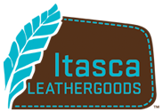

Skip to a specific project

TheChessStore.com is a distributor of some of the best chess sets available worldwide. While their primary product are wooden chess boards (regularly #1 in rankings for
keyword searches in google), they also sell literally any kind of chess equipment, tools, and documentation you could ever want to help your chess game. When Clinton was assigned
to working with Jeff(The President of The Chess Store), He had a grand vision for what he wanted thechessstore.com to become. The first step was to simply his e-commerce
maintenance by combining his v-store and m. store into a singular single page rich web application whilst also opening up options for expansion into mobile app territory
down the road. He also wanted to update the layout and functionality of his existing store and at the same time, keep the theme of his store recognizable and distinctly looking
like thechessstore.com that his customers have grown to know. For additional features, he wanted to expand the controls he had over his elastic search for products from within
the app by adding filtered search to various categories of products throughout the appsite. While the elastic search API calls were handled from within the app, Jeff had
complete control over which products belonged to which filters within a category(through the use of the Zoovy Inc Admin UI backend tool), which was a huge boon to him as he
now could control exactly what products popped in front of customers for a given filter. This project also decided to utiilize one of Zoovy's in-house developmenyt tool
that allowed budget minded clients to easily make their site responsively sound for mobile whilst adding 0 cost onto the total of the project. This feature worked by setting
the zoom value of viewscreen based on the users sreen size against the width of the content area of the site. Lastly, Jeff wanted to bring the site tools up to speed,
utilizing tools like product quickview, hover zoom on product images, and other modern e-commerce tools. All of the above features were completed on time and are still currently
viewable on their live site, which can be visited by Clicking here.
Working on OnlineFormals.com has been a labor of Love. This client's storefront specialized in female formal wear ranging from Prom to Bridal wear. From the moment Clinton was
given the opportunity to work with Steve(Owner of Online Formals), it has been nothing but joy. This project has been truly one of his favorites to work both due to its
content, planned future upgrades, and having the priviledge of working with the clients, Steve and Michelle. While this project did not require the use of any technically complicated
features, it is a perfect example of the flat, "less is more" design trend that has started to sweep over modern web designs everywhere. The project requirements were very
simliar to the thechessstore.com in terms of features with some changes to the styles and layout. As with The Chess Store, Steve wanted to have filtered search available
from within his categories to make browsing for the right dress much easier than previously. Unlike The Chess Store, he wanted the filtered search to be much less obtrusive
and have the capability to be minimized on the page and have the page layout adjust accordingly. For his product pages we opted instead to use the in-house product hover
zoom feature instead of the more widely used third party platforms available. This was done to ensure the hover zoom could work more effectively in mobile as many hover
features are either restricted or entirely negated in mobile. This project also utilized the mobile zoomout feature in lue of responsive design due to budgetary constraints.
Online Formals was already a successful e-commerce company when Clinton was given this project and it has been one of his greatest honors to have been able to work on this project
with them. The appsite is still currently live and can be viewed by clicking here.

ItascaMocassin.com is a leathergoods manufacturing and distribution company based out of Lake George, MN. Their primary product were moccasins in various styles, colors,
and genders groups, although they also marketed numerous other leather goods. This particular project build had already been completed by another developer but was handed to
Clinton to provide maintenance, upgrades and a feature overhaul. He was asked to update their company pages (about us, contact information, FAQ, etc) wnd wasalso tasked with a
complete overhaul to their product page. They wanted to include a hover zoom feature with some slight customization. Due to existing layout constraints, they could only visbly
show 3 thumbnail images at any given time and some products had more than just 3 thumbnail images. To solve this, the thumbnails were placed in a vertical carousel to allow
scrolling between the thumbnails as well as changing the main product image on hover over the thumbnail image. Lastly, they wanted the available sizes to be readily visible
as soon as the customer hit the page instead of having to click the size dropdown. This issue was solved by utilizing an open source Jquery tool (
click here to view on github) that took the option values of the
select element and added a anchor element box for each option. When a given anchor was clicked, its associated option in the select menu was set to selected, ultimately performing
the same functionality without any need for any API call modifications. The live site can be viewed by
clicking here
TikiMaster.com is a distributor of handcarved tiki totems and other native Polynesian collectables based out of Hawaii. Because a big chunk of their customer base are tourists
and due to the large size of many tikis, having a strong online e-commerce presence was essential maintaining their business and connecting their clients with products once
they were back on the mainland. Like Itasca Moccasin, this project build had already been completed when it was handed to Clinton to maintain and upgrade. Because the upgrade
had been during a rush period, many styling bugs had managed to pop up that required correcting, namely with drop down overlays and links not working correctly. After those had
been repaired, the client requested some "addtional omf" be added to the site to really make the experience feel more authentic. To achieve this, several subtle animations were
added to different areas of the site (like a swinging animation for the hanging sign links) as well as some other subtle hover animations to help direct attention to the area.
The big push with this project however was to bring in line their SEO capabilities and really try to push up their keyword rankings. To aid in this process, best practices were
applied in the form of proper schema usage for product pages as well correct usage of heading tags and other practices meant to improve crawlability of the site. The app site is
still live today and can be viewed by clicking here.
BlueCollarDepot.com was a distributor of blur collar worker clothing. This particular project was actually a feature build project for Clinton and one of the most ambitious
ones he had been handed at the time. For this project, they wanted to add a product customizer for one of their main products that had several customization options. While the
options for these customizations already existed, they wanted to have a better visual indicator for the customer so they could see basically how their product would look after
all of the customizations were applied. The product was their mainline coveralls, available in many color variations and providing a large variety of reflective stripe colors
in over 20 different locations on the coveralls. They also wanted to include patches on the shoulders and nametags and company names/logos above the front pockets if the customer
so opted. To build this project, Clinton utilized the then newly minted HTML5 canvas elements and some simple javascripting to quickly render both the coverall images along with
the stripes in their correct locations. The same technique was used for the shoulder patches using smaller images of the shoulder patches available. For custom client logo,
Joe (Owner of Blue Collar Depot) opted to go the cheaper route and use a placeholder image rather than create a image upload wizard so customers could upload a thumbnail of their
logo to see on the customizer. Lastly, nametags utilized a input box on the product page where the name could be typed in. When they either clicked out of the box or clicked the
refresh button, A text placeholder would appear over the left/right pocket displaying the name in the selected color and size. The customizer immediately proved to be an asset
to them. However, a few months later, Blue Collar Depot decided they were temporarily pulling out of the e-commerce market while Joe attended to some family matters. To date,
the site has not been resumed.